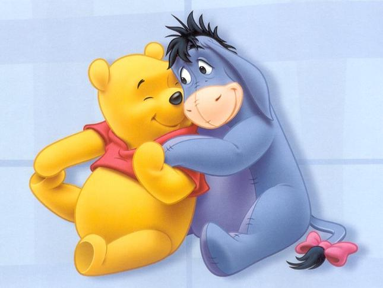

Секция 1
Мечо Пух (на английски: Winnie-the-Pooh) е плюшено мече, герой от разказите и стиховете на английският писател Алън Милн. Това е един от най-известните литературни герои от книгите за деца. Издадени са два сборника с разкази: „Мечо Пух“ (1926) и „Къщичката в къта на Пух“ (1928), както и отделни стихотворения. Разказите са отделни, могат да се четат и филмират поотделно, а книгите се издават заедно или поотделно. През втората половина на 20 век за Мечо Пух са направени анимационни филми от „Дисни“ и „Союзмультфильм“, с което той става особено популярен. Егмонт България издава илюстровани книги с Мечо Пух по лиценз на "Дисни", а месечното списание "Мечо Пух" излиза от 1999 година насам.
Секция 2
История на името През 1924 г., по време на семейна разходка до Лондонската зоологическа градина, Кристофър Робин Милн, синът на писателя А.А. Милн, се запознава с Уини. Кристофър се привързва силно към Уини и започва да го посещава често, като понякога дори влиза в клетката му. Скоро сменя името на любимото си плюшено мече Едуард (получено като подарък още за първия му рожден ден) с Уини Пух (Winnie the Pooh), в чест на приятеля си от зоологическата градина. Съществуват две версии за появата на втората част от името – Пух (като и двете са споменати от Милн в книгата „Мечо Пух“). Според едната, Пух е името на играчка лебед, която Кристофър по-рано е имал, а според другата – „пух“ е звукът, който Мечето Едуард е издавало, за да пъди мухите от носа си, докато е висяло повече от седмица на ръцете си (по време на едно от приключенията си). В българския език името е прието с превода „Мечо Пух“
Секция 3
История на героите Оригиналните плюшени играчки, вдъхновили създаването на героите Тигър, Кенга, Мечето Едуард (известно повече като Мечо Пух), Йори и Прасчо (по посока на часовниковата стрелка, наляво от долния край на снимката). През 1925 г. Алан А. Милн и съпругата му Дафне се преместват от Лондон в Хартфилд, Източен Съсекс, в малко имение от 16 век, наречено „Кочфорд фарм“ (Cotchford Farm). Къщата им граничи с гората Ашдаун, която всъщност е реалното съответствие на „Сто-акровата гора“ („Hundred Acre Wood“; в българския превод – „Гората“ и „Голямата гора“), която е главната сцена на действията в книгата. Алан А. Милн се вдъхновява от приятелството на сина си с мечката Уини и от игрите му с плюшения Пух и започва да ги описва. Появяват се историите за приключенията на Мечо Пух, Кристофър Робин и техните приятели от Гората (базирани също върху реално съществуващи плюшени играчки на малкия Кристофър) – Прасчо, Ийори, Тигър, Кенга и Ру. Други герои от книгата, като Заека и Бухала, са вдъхновени от истински животни, виждани в покрайнините на гората Ашдаун